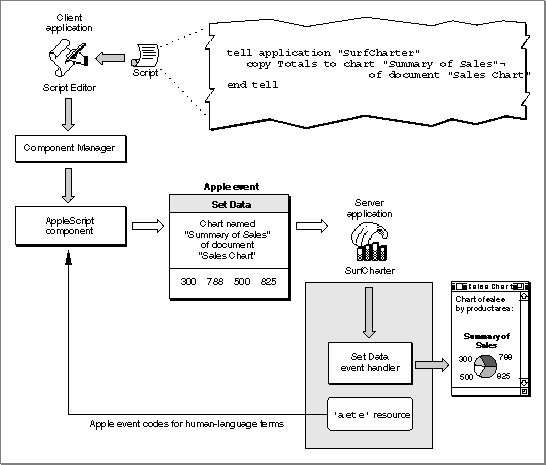

Legacy Document
Important: The information in this document is obsolete and should not be used for new development.
Important: The information in this document is obsolete and should not be used for new development.


Scriptable Applications
If your application can respond to standard Apple events sent by other applications, it can also respond to the same Apple events sent by a scripting component. Before executing a script that controls your application, a scripting component must associate the human-language terms used in the script with specific Apple event codes supported by your application. Scriptable applications provide this information in an Apple event terminology extension ('aete') resource.Because scripting components can obtain information from
'aete'resources about the nature of different applications' support for Apple events, a single script can describe complex tasks performed cooperatively by several specialized applications. For example, a user can execute an AppleScript script to locate all records in a database with specific characteristics, update a series of charts based on those records, import the charts into a page-layout document, and send the document to a remote computer on the network via electronic mail.When a user executes such a script, the AppleScript component attempts to perform the actions the script describes, including sending Apple events to various applications when necessary. To map human-language terms used in the script to the corresponding Apple events supported by each application, the AppleScript component looks up the terms in the applications'
'aete'resources. Each human-language term specified by an application's'aete'resource has a corresponding Apple event code. After the AppleScript component has identified the Apple event codes for the terms used in a script, it can create and send the Apple events that perform the actions described in the script.To respond appropriately to the Apple events sent to it by the AppleScript component, the database application in this example must be able to locate records with specific characteristics so that it can identify and return the requested data. The other applications involved must support Apple events that perform the other actions described in the script.
One line in such a script might be a statement like this:
copy Totals to chart "Summary of Sales" of document "Sales Chart"In this statement, the wordTotalsis a variable that has been set earlier in the same script to the value of the new data generated by a database application. The statement causes the AppleScript component to send a Set Data event updating the chart named "Summary of Sales." Figure 1-8 shows how the AppleScript component would execute this statement. (Figure 1-6 on page 1-12 shows a database application that sends a similar Set Data event directly.)To interpret the terms in this script statement correctly, the AppleScript component must be able to look them up in the SurfCharter application's
'aete'resource, which maps those terms to the corresponding codes for Apple events, object classes, and so on used by the Apple Event Manager. The AppleScript component can then create and send the Set Data event to SurfCharter.When it receives the Set Data event, the SurfCharter application uses the Apple Event Manager to determine what kind of Apple event has been sent and to pass the event to SurfCharter's handler for that event, which in turn locates the chart and changes its data as requested.
The chapter "Introduction to Scripting" in this book describes how the
'aete'resource works. The chapter "Apple Event Terminology Resources" describes how to define terminology for use by the AppleScript component and how to create an'aete'resource.Figure 1-8 A Set Data event sent during script execution
